Rodada 4 · botas e mochila nv.1
icon_boots (4 candidatas) e icon_backpack nv.1 (3 candidatas). Desta vez desenhados pixel a pixel, não no r3d: em 16 px o r3d escolhia a silhueta sozinho, e a silhueta era o problema. As paletas são as mesmas de 5 tons dos equipáveis 3D aprovados (branco do traje, laranja #e2733a, fibra, resina, cinza, escuro), com a mesma luz (de cima e da esquerda) e o mesmo contorno #1b1630. A mochila C sai da própria icon_backpack_t2.png aprovada, só recolorida. Nada foi pro jogo. Tamanhos: todos 16×16, alpha 0/255, pendentes só com os 2 nomes do contrato. Anteriores: rodada 3 · rodada 2 · rodada 1.1 · Botas (4 candidatas)
Pra fugir do "L", nenhuma tem mais o ângulo reto entre o cano e o pé. Em todas: o cano é um cilindro com a boca aberta em cima (o anel do punho de fibra verde em volta do escuro) e faixas de luz e sombra; o bico é redondo e grande; a sola de resina azul-gelo é grossa e tem cravos embaixo; e uma tira de fibra com fivela de resina passa no peito do pé. A receita (fibra + resina) fica visível nas duas cores.
Lado a lado a 1× e ×4 no fundo do slot:
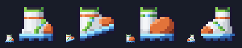
As reprovadas, pra comparar
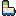


No slot, na escala do jogo (Grande ×2)
Tanque, scanner, mochila nv.1 (A), Mochila T2, tanque nv.2 e a bota da candidata, por último.
A

B
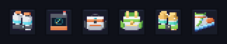
C
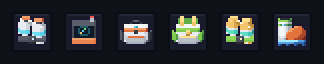
D
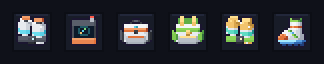
No cartão TRAJE do Tab A: com nv.1 e com nv.2
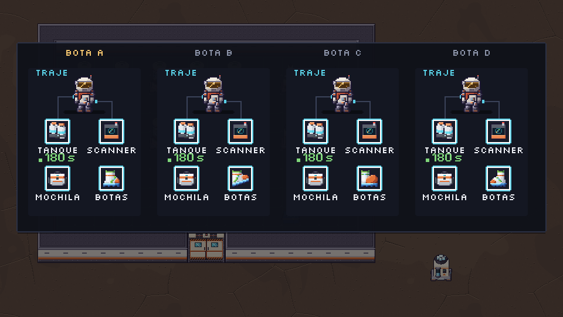
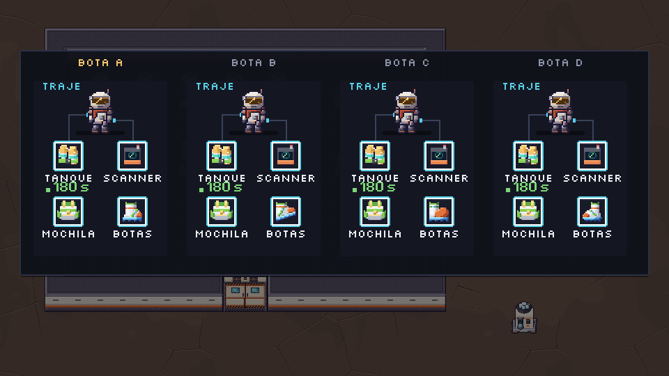
2 · Mochila nv.1 (3 candidatas)
Todas são da família da Mochila T2 aprovada (corpo branco em domo, aba e bolso cinza embaixo), sem o dourado e sem a fibra, e com a leitura do 2D antigo: o LED ciano, as alças de ombro escuras e a alça de mão.
1× e ×4 no fundo do slot (a última é a T2 aprovada):
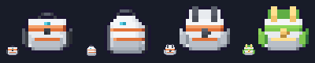
As anteriores, pra comparar

No slot, na escala do jogo (Grande ×2)
Tanque, scanner, a mochila da candidata (3º), Mochila T2, tanque nv.2 e a bota A.
A
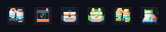
B
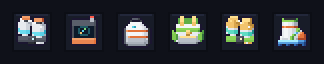
C
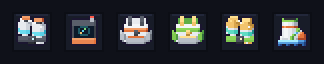
No cartão TRAJE: as 3 nv.1 e o nv.2 aprovado do lado
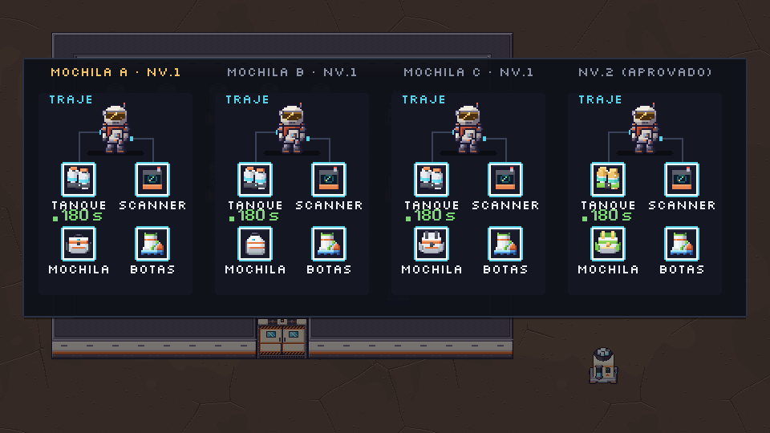
Tab A inteiro com as recomendadas
O Tab A aprovado mostra o traje nv.2. A bota A aparece no slot BOTAS; a mochila nv.1 aparece nos cartões acima.
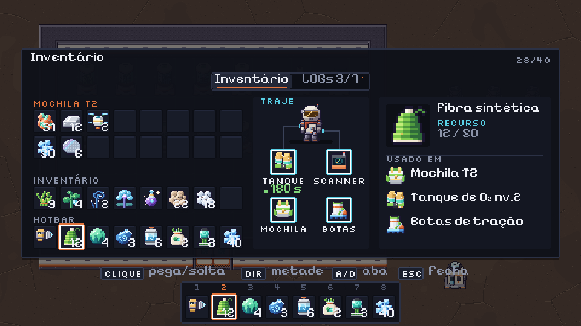
Pro Dev integrar (depois do ok do dono)
- Só troca de PNG, nenhum código muda.
v08_m5_itens_r4/pendentes/icon_boots.pngependentes/icon_backpack.pngvão praassets/sprites/com o mesmo nome: 16×16 RGBA, ícone de item como os outros (sem âncora: desenhado no slot com 2 px de margem, ×2 no Grande). - Se o dono escolher outra:
candidatas/icon_boots_{A..D}.pngoucandidatas/icon_backpack_{A..C}.png, renomeado sem a letra. - O fantasma do slot vazio no TRAJE continua sendo o ícone nv.1 a alpha 45 (BOTAS e MOCHILA).
- Gerar de novo:
python3 tools/sprites/v08_m5_r4.py. É determinístico, só lêassets/e não mexe nobuild_sprites.py.